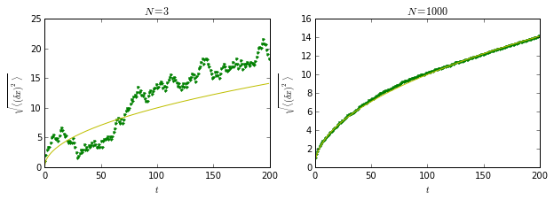

浅析热运动
写在前面的话：这是我作为2014年秋季学期《普通物理（B）II》课程助教时，写给非物理系本科生的一个注解，或者说与大家分享的思考。教材是北京大学出版社《大学通用教程·热学》，这篇短文在学习完第二章后，写在Practice一栏中，拟定的题目本来是《从“物质分子处于不停顿的无规则的运动状态”到热平衡态的统计分布律》，但是显得太长了，所以减缩成《浅析热运动》。
物理的奇妙之处在于，它试图探究世界的本原、真实客观的存在；善用数学但不囿于数学，而且有哲学思辨的魅力。理解物理规律往往先从现象（自然语言）描述出发，经过理论（数学公式）推演，最后直达事物本质。这篇短文藉此谈谈篇首说的“物质分子处于不停顿的无规则的运动状态”，直观来看，比较容易接受。但仔细想想什么意思？这句话有两个定语，我们可以审视一番。“不停顿”是指微观粒子不会待着不动，动能不为零，这句话没有提到限定条件，也即是说在任何情形下微观粒子都在运动。说到“任何情形”，有人可能就会怀疑了，怀疑是可贵的 。 我们知道理想气体的平均动能和温度的关系：
第二个定语是“无规则”，也就是说完全随机，速度的大小和方向都是随机的。空间各个方向都可能有微观粒子在跑，以至于推导麦克斯韦分布律的时候只需考虑速度大小即可。但是为什么？这背后说的其实是空间取向的平等性、对称性，即不应当存在一个独特的方向，使粒子做出“奇怪”的行为。第二章下半部分我们进一步说能量在各个自由度也是均等分配的，不存在“独特”的自由度。能量均分定理是细致平衡原理导致的，我认为这更多地是一种朴素的哲学思想，很难用数学公式证明。哲学的基本命题是对宇宙的思考，核心内容便是时间和空间。对于初学者看来，一个极不可思议的事情可能是微观粒子竟然满足速度分布律。不知道大家是否感到奇怪，几年前我初次接触这个物理规律时觉得非常诧异：大量混乱无序的个体为什么会遵循统计规律性？我更曾想，这些彼此无关的“没头苍蝇”怎么会相约着来个“规律”？要探讨这个问题，我打算分成三个层次来说。
首先，统计的前提必须是足够多个体或者事件，单个个体的无规则性在统计的话语里演变成“涨落”，涨落反比于粒子数（的开方）。还记得布朗运动吧，其实布朗运动在诸多领域中都非常重要，数学中称作维纳过程，为什么重要呢？一个原因是它也满足统计规律（没有规律的事情只能说是天灾或者福运，然后借助占卜问神，这和自然科学没有多大关系），郎之万方程揭示一维情形时微观粒子布朗运动的均方位移

虽然单个Walker的行为完全随机，但是大量同样的Walker满足统计规律性，方均根位移与时间满足\(\sqrt{\langle (\delta x)^2 \rangle} \propto t\)。
然后，我们接着问，为啥就有这样的统计规律性呢？这个问题也可以这样表述：好，我看到确实统计起来数学公式可以表达，但是我想知道道理在哪。其实，这样问的原因在于还是没有接受这个世界中有些客观问题本质就是概率的，不是机械的。当哥白尼等人证明地球绕着太阳转时，所有人也觉得没有道理，甚至有宗教迫害的威胁；后来牛顿认为宇宙像上了发条的钟表，热动平衡中的概率分布就变得很奇怪，不过爱因斯坦就接受了，还为解释布朗运动做出重要贡献；但是当量子论出现后，爱因斯坦也直呼“上帝不会掷骰子”——现实比想象更离奇。人们对世界的认识是不断革新的，物理学家对理论体系也是不断自我修正的。统计规律性已经延伸到其他领域，如社会学和金融学，其客观存在就如同万有引力的存在那样真实。
说了这么多，或许还有极少数人继续追问，为什么这个世界是统计规律的，或者泄气地说，世界干嘛要弄成这样！好吧，这时候我的思考是这样的，物理学家尽可能地解释世界的深层次内涵，但是有些问题已经超出了科学的边界，有待哲学家做出他们的贡献。很多时候我们如同身处柏拉图的“洞穴”，对外面世界的了解未必是一手资料，得到的理论只是要让所有的观察自洽。物理学家们努力告诉我们是什么，不一定有能力告诉我们为什么。量子力学的出现把人类的理解能推到边缘，对一些问题丧失了具象能力，量子力学的大师也教导我们“闭嘴，只管算”（不要问为什么）。但是，人类就是在某些个体不断追问为什么的过程中，向前发展。与锁在洞穴里的人不同，我们是自由的。
这就是我从“物质分子处于不停顿的无规则的运动”出发，对第二章统计分布律内容的注解，虽然不是直接解析公式，但希望能加深大家的认识。
:) 如有不妥之处，请联系我。
Last Modified: 2014-10-11